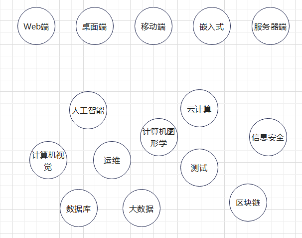
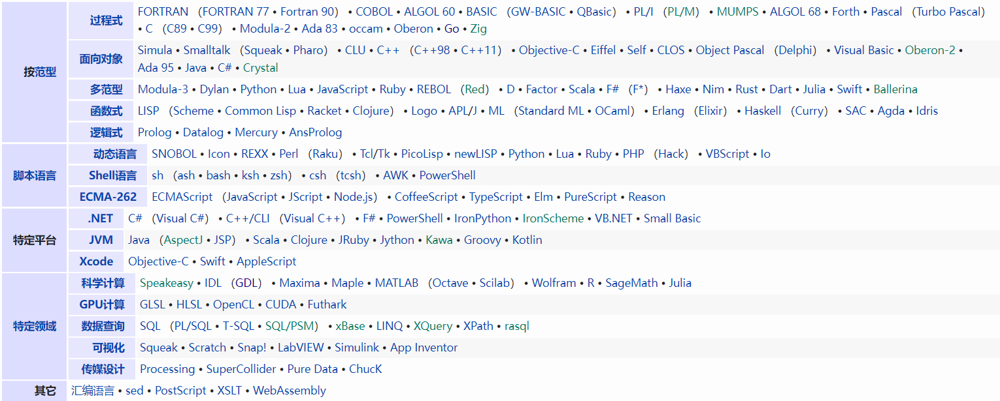
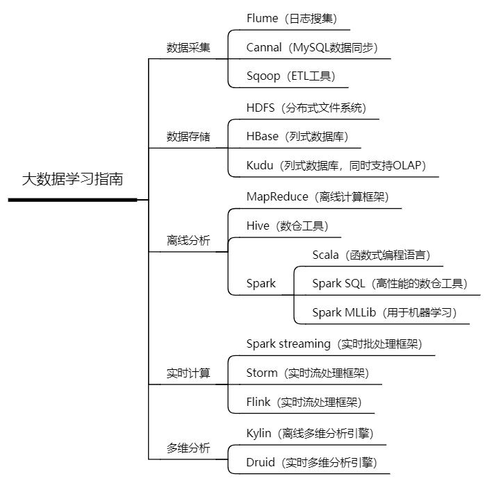
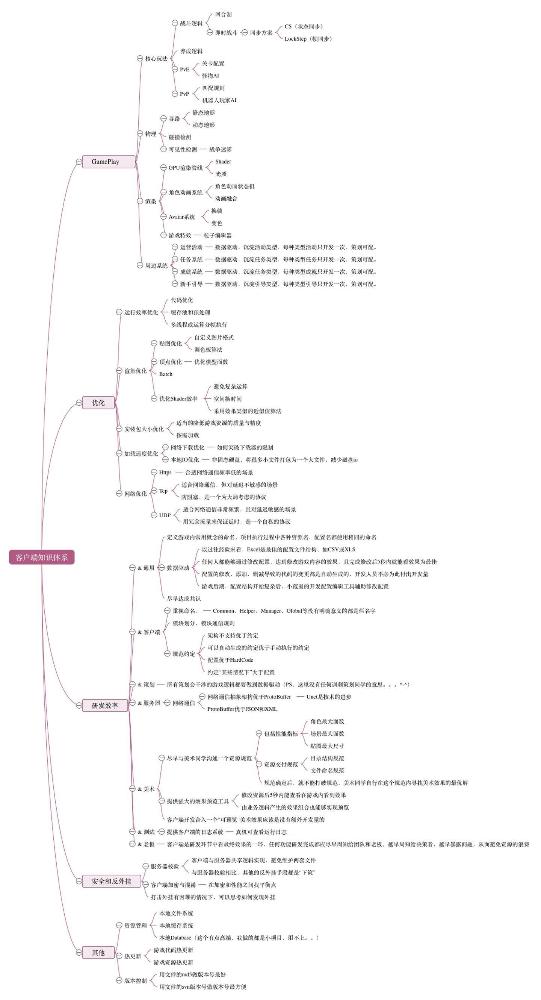

编程语言综述
前言
编程语言由整套的词汇和语法规范组成，具有核心编程思想和设计理念。
主要方向

语言

静态语言
编译时变量的数据类型可以确定
C
C++
C#
Java
Go
- 微软技术： .NET Window From，WPF，MFC，WTL，DirectX
- JAVA技术： Swing，AWT等
- 开源的： QT, wxWidgets等
手机程序开发
手机软件，主要指安装在智能手机上的软件，完善原始系统的不足与个性化。使手机完善其功能，为用户提供更丰富的使用体验的主要手段。
主要平台
- Android：Android Studio + Kotlin
- IOS：Xcode + Objective-C / Swift
嵌入式开发
嵌入式开发就是指在嵌入式操作系统下进行开发，包括在系统化设计指导下的硬件和软件以及综合研发。除暂且分离硬件的EDA研发以外，侧重 的就是在一定硬件条件下的系统化设计和软件研发。如手表、微波炉、录像机、汽车等，都使用嵌入式系统
机器学习
机器学习是一门多领域交叉学科，涉及概率论、统计学、逼近论、凸分析、算法复杂度理论等多门学科。专门研究计算机怎样模拟或实现人类的学习行为，以获取新的知识或技能，重新组织已有的知识结构使之不断改善自身的性能。
- TensorFlow
- MXNet
- PyTorch
- CNTK
大数据
大数据(big data)，或称巨量资料，指的是所涉及的资料量规模巨大到无法透过目前主流软件工具，在合理时间内达到撷取、管理、处理、并整理成为帮助企业经营决策更积极目的的资讯

云技术
云技术是指在广域网或局域网内将硬件、软件、网络等系列资源统一起来，实现数据的计算、储存、处理和共享的一种托管技术。
游戏开发
引擎
- unity
- cocos2d
- UE4
图形库
- DirectX
- OpenGL
编程语言
前端
web
HTML
超文本标记语言（HyperText Markup Language）是一种用于创建网页的标准标记语言，由浏览器解析。
超文本是一种组织信息的方式，它通过超级链接方法将文本中的文字、图表与其他信息媒体相关联。这些相互关联的信息媒体可能在同一文本中，也可能是其他文件，或是地理位置相距遥远的某台计算机上的文件。这种组织信息方式将分布在不同位置的信息资源用随机方式进行连接，为人们查找，检索信息提供方便。
优点
- 简易性
- 可拓展性
- 平台无关性
- 通用性
缺点
- 交互性差
- 语义模糊
XML
可扩展标记语言，标准通用标记语言的子集
- XML可以从HTML中分离数据
- XML可用于交换数据
- XML可应用于B2B中
- 利用XML可以共享数据
- XML可以充分利用数据
- XML可以用于创建新的语言，如WAP、WML
优点
- 可高度拓展
- 结构性
- 可校验性
CSS
层叠样式表(英文全称：Cascading Style Sheets)是一种用来表现HTML（标准通用标记语言的一个应用）或XML（标准通用标记语言的一个子集）等文件样式的计算机语言。CSS不仅可以静态地修饰网页，还可以配合各种脚本语言动态地对网页各元素进行格式化。
Javascript
JavaScript（简称“JS”） 是一种具有函数优先的轻量级，解释型或即时编译型的编程语言。支持面向对象、命令式、声明式、函数式编程范式。
- 嵌入动态文本于HTML页面。
- 对浏览器事件做出响应。
- 读写HTML元素。
- 在数据被提交到服务器之前验证数据。
- 检测访客的浏览器信息。控制cookies，包括创建和修改等。
- 基于Node.js技术进行服务器端编程。
- AngularJS：一款构建用户界面的前端框架，后为Google所收购。
- Bootstrap：基于HTML、CSS、JavaScript 开发的简洁、直观、强悍的前端开发框架，使得 Web 开发更加快捷。
- HTML5 Boilerplate：一套具有非常多先进特性的框架，前端开发模板
- React：React是用于构建用户界面的JavaScript库集成的web框架
- React Native：React Native (简称RN)是Facebook于2015年4月开源的跨平台移动应用开发框架，是Facebook早先开源的JS框架 React 在原生移动应用平台的衍生产物，支持iOS和安卓两大平台。
node.js
一个基于Chrome V8引擎的JavaScript运行环境，使得js可以胜任后端工作
Game
主要指客户端
C++
C++是C语言的继承，它既可以进行C语言的过程化程序设计，又可以进行以抽象数据类型为特点的基于对象的程序设计，还可以进行以继承和多态为特点的面向对象的程序设计。C++擅长面向对象程序设计的同时，还可以进行基于过程的程序设计，因而C++就适应的问题规模而论，大小由之。
C#
C#是微软公司发布的一种由C和C++衍生出来的面向对象的编程语言、运行于.NET Framework和.NET Core(完全开源，跨平台)之上的高级程序设计语言。
Lua
Lua由标准C编写而成，代码简洁优美，几乎在所有操作系统和平台上都可以编译，运行。 一个完整的Lua解释器不过200k，在所有脚本引擎中，Lua的速度是最快的。这一切都决定了Lua是作为嵌入式脚本的最佳选择。
Android
- Java + Android API
- Kotlin：一种在 Java 虚拟机上运行的静态类型编程语言
IOS
objective_c + IOS API
后端
web
PHP
PHP（PHP: Hypertext Preprocessor）即“超文本预处理器”，是在服务器端执行的脚本语言，尤其适用于Web开发并可嵌入HTML中。支持面向对象和面向过程的开发。
ASP+
- 多语言支持：类似JAVA的“二次编译技术”–生成中间语言MSIL。只要能被编译成MSIL的编程语言都可以用来编写ASP.NET应用。
- 编译执行，但是可以缓存编译结果，第二次之后的页面请求能直接使用编译结果
- 类和名空间
- 服务器控件
- 支持web服务
- 更高的安全性
- 良好的可伸缩性
- 无Cookie会话
JAVA
Java是一门面向对象编程语言，不仅吸收了C++语言的各种优点，还摒弃了C++里难以理解的多继承、指针等概念，因此Java语言具有功能强大和简单易用两个特征。
Java具有简单性、面向对象、分布式、健壮性、安全性、平台独立与可移植性、多线程、动态性等特点。Java可以编写桌面应用程序、Web应用程序、分布式系统和嵌入式系统应用程序等。
- 集成开发工具（IDE）：Eclipse、MyEclipse、Spring Tool Suite（STS）、Intellij IDEA、NetBeans、JBuilder、JCreator
JAVA服务器：tomcat、jboss、websphere、weblogic、resin、jetty、apusic、apache - 负载均衡：nginx、lvs
- web层框架：Spring MVC、Struts2、Struts1、Google Web Toolkit（GWT）、JQWEB
- 服务层框架：Spring、EJB
- 持久层框架：Hibernate、MyBatis、JPA、TopLink
- 数据库：Oracle、MySql、MSSQL、Redis
- 项目构建：maven、ant
- 持续集成：Jenkins
- 版本控制：SVN、CVS、VSS、GIT
- 私服：Nexus
- 消息组件：IBM MQ、RabbitMQ、ActiveMQ、RocketMq
- 日志框架：Commons Logging、log4j 、slf4j、IOC
- 缓存框架：memcache、redis、ehcache、jboss cache
- RPC框架：Hessian、Dubbo
- 规则引擎：Drools工作流：Activiti
- 批处理：Spring Batch
- 通用查询框架：Query DSL
- JAVA安全框架：shiro、Spring Security
- 代码静态检查工具：FindBugs、PMD
- Linux操作系统：CentOS、Ubuntu、SUSE Linux
- 常用工具：PLSQL Developer（Oracle）、Navicat（MySql）、FileZilla（FTP）、Xshell（SSH）、putty（SSH）、SecureCRT（SSH）、jd-gui（反编译）
JDK
Java Development Kit，称为Java开发包或Java开发工具，是一个编写Java的Applet小程序和应用程序的程序开发环境。包括了Java运行环境（Java Runtime Environment），一些Java工具和Java的核心类库（Java API）。
JRE
运行JAVA程序所必须的环境的集合，包含JVM标准实现及Java核心类库。
maven
一个（特别是Java编程）项目管理及自动构建工具，基于项目对象模型（缩写：POM）概念，Maven利用一个中央信息片断能管理一个项目的构建、报告和文档等步骤。
JS+node
VBscript
一种微软环境下的轻量级的解释型语言，它使用COM组件、WMI、WSH、ADSI访问系统中的元素，对系统进行管理。同时它又是asp动态网页默认的编程语言，配合asp内建对象和ADO对象，用户很快就能掌握访问数据库的asp动态网页开发技术。
C++
CppCMS
一个C++的Web开发框架，用于处理极高的负荷
Game
服务器端
游戏服务器是给游戏客户端提供后端服务的电脑主机
- 强联网：一般用于在线即时战斗互动的游戏，比如一些竞技游戏，需要玩家客户端在游戏过程中一直与服务器进行通信，所以往往一台很强配置的服务器才能满足大量玩家的使用，一般还需要集群部署的服务器才能投入生产环境的使用。
- 弱联网：不需要玩家客户端一直与后端服务器通信，而是只在需要进行通信需要的时候才会进行网络通信并会在完成通信后断开连接，这个就有点类似于看网页的http请求。“弱联网”型游戏后端服务包括在玩家数据云存档，成就数据更新，获得奖励，开宝箱签到等，这种类型的游戏后端服务因为不需要客户端一直与服务器进行通信，所以往往不需要很强大的服务器配置就可以满足大量玩家的使用需求。
Go
Go（又称 Golang）是 Google 的 Robert Griesemer，Rob Pike 及 Ken Thompson 开发的一种静态强类型、编译型语言。Go 语言语法与 C 相近，但功能上有：内存安全，GC（垃圾回收），结构形态及 CSP-style 并发计算。
Android、IOS
web后端
其他
静态语言类型确定，而动态语言类型不确定
强类型语言不允许隐式的类型转换，弱类型语言反之

动态语言（脚本语言）
解释性语言
Python, Perl, Ruby可用作通用性语言，进行应用开发
优点
- 快速开发
- 容易部署
- 同已有技术的集成
- 易学易用
- 动态代码
缺点
- 不够全面，需要依附静态语言
- 不适用于软件工程和构建代码结构
- 通常不是”通用”语言
Python
Python是一种解释性高级通用编程语言。它的设计理念强调代码的可读性，并使用了显著的缩进。它的语言结构和面向对象的方法旨在帮助程序员为小型和大型项目编写清晰的逻辑代码。
框架
- Django：Django是一个开放源代码的Web应用框架，由Python写成。采用了MTV的框架模式。
- Flask：Flask是一个轻量级的可定制框架，使用Python语言编写，较其他同类型框架更为灵活、轻便、安全且容易上手。
- Google App Engine：允许本地使用Google基础设施构建Web应用，待其完工之后再将其部署到Google基础设施之上。
- Pyramid：一个小型，快速的Python web framework.，是Pylons Project的一部分，采用的授权协议是BSD-like license。
- web2py ：一个为Python语言提供的全功能Web应用框架，旨在敏捷快速的开发Web应用，具有快速、安全以及可移植的数据库驱动的应用，兼容 Google App Engine。
IDE
- Pycharm：Scientific模式，运行和调试具有数据可视化的Python代码；Angular CLI：用于简单，快速构建Angular2项目；
Perl
Perl一种功能丰富的计算机程序语言，运行在超过100种计算机平台上，适用广泛，从最初是为文本处理而开发的，现在用于各种任务，包括系统管理，Web开发，网络编程，GUI开发等。
Ruby
Ruby，一种简单快捷的面向对象（面向对象程序设计）脚本语言
MATLAB
MATLAB语言是一种高级的基于矩阵/数组的语言，它有程序流控制、函数、数据结构、输入/输出和面向对象编程等特色。用这种语言能够方便快捷建立起简单运行快的程序，也能建立复杂的程序。
静态语言
TypeScript
TypeScript是微软开发的一个开源的编程语言，通过在JavaScript的基础上添加静态类型定义构建而成。TypeScript通过TypeScript编译器或Babel转译为JavaScript代码，可运行在任何浏览器，任何操作系统。
数据库
面向操作的关系型数据库
- 典型性应用领域：ERP、CRM、信用卡交易、中小型电商
- 数据储存方法：表格
- 流行厂商：Oracle Database,Microsoft SQLServer,IBM DB2,EnterpriseDB(PostgreSQL),MySQL
- 优点：完善的生态环境保护，事务保证/数据一致性
- 缺点：严苛的数据模型界定，数据库拓展限制，和非结构型的结合应用较难。
面向数据分析的关系型数据库
- 典型性应用领域：数据仓库，商务智能，数据科学研究
- 数据储存方法：表格
- 流行厂商：Oracle Exadata、Oracle Hyperion、Teradata、IBM Netezza、Google BigQuery
- 优点：信息内容和计算的一致性
- 缺点：必须由数据库技术专业的IT工作人员维护保养，数据相应通常是分钟级
面向操作的非关系型数据库
- 典型性应用领域：Web、mobile、and IoT applications、social networking、user recommendations、shopping carts
- 数据储存方法：很多存储结构(document、graph、column、key-value、time series)
- 流行厂商：MongoDB、Amazon DynamoDB、Amazon、Redis
- 优点：便捷性，协调能力(不用预定义的方式)，水平伸缩(适应大规模数据量)，成本低(开源系统)
- 缺点：欠缺事务保证
面向数据分析的非关系型数据库
- 典型性应用领域：索引数以百万计的数据点、预测分析、诈骗检验
- 数据储存方法：Hadoop不用原有的数据构造，数据能够跨好几个服务器存储
- 流行厂商：Cloudera、Hortonworks、MapR、MarkLogic、Snowflake、DataBricks、ElasticSearch
- 优点：适用批量处理,并行处理文件;主要是开源的，资金投入较低
- 缺点：迟缓的响应速度，不宜迅速检索或高速更新
